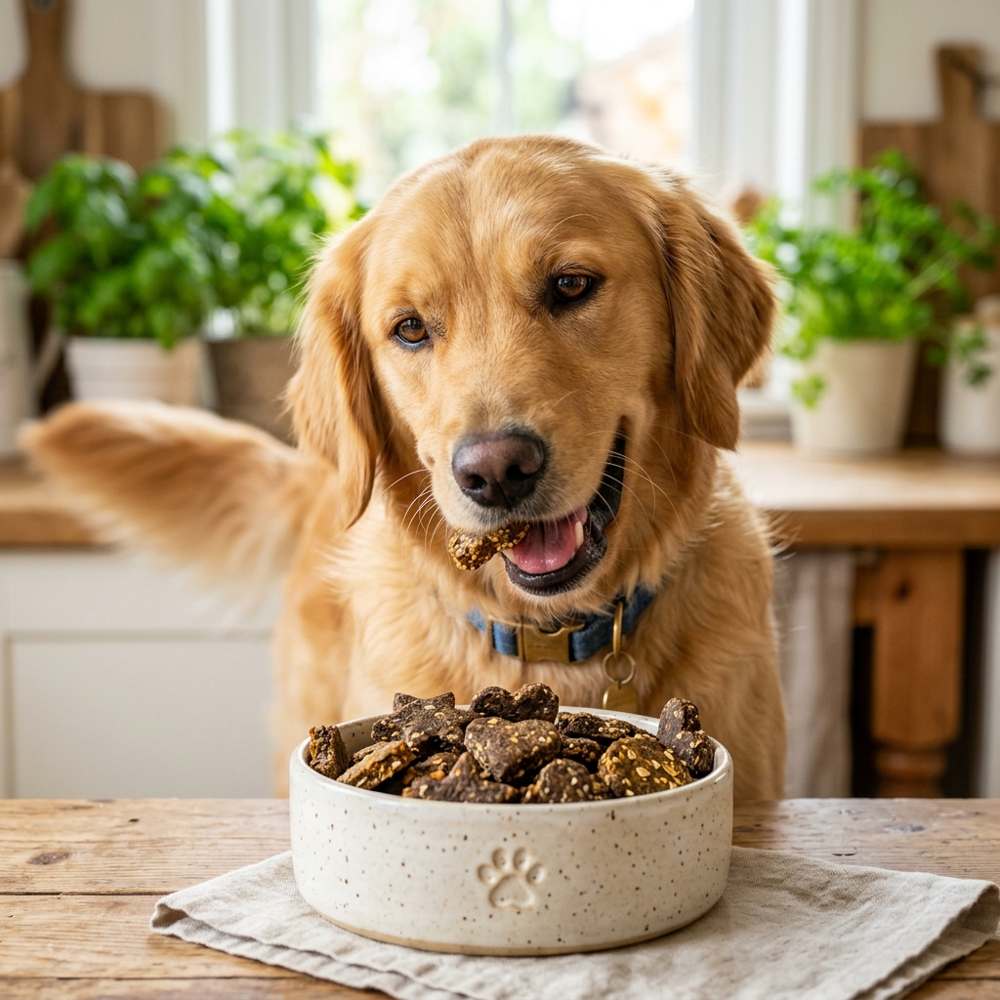
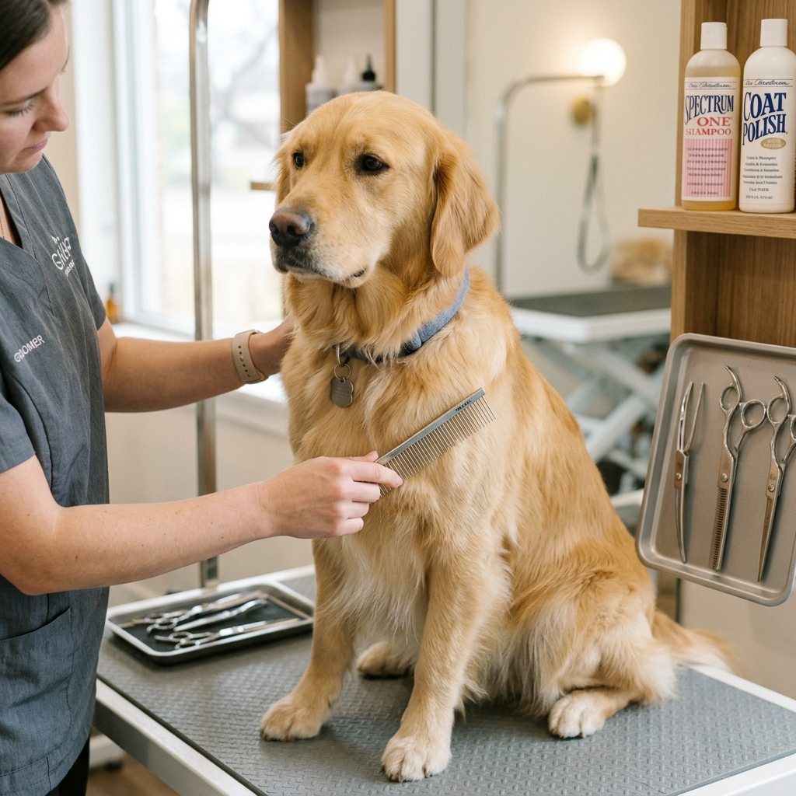

The Ultimate Puppy Care Guide for New Owners
Bringing home a new puppy is exciting! Discover the essential tips for the first 30 days of puppy parenthood, routine setting, and safe puppy spaces.
Expert tips on canine behavior, feline communication, balanced nutrition, and gentle grooming to help your pets live their happiest lives.

Find tailored guidance by pet care topic and category.
Handpicked foundational guides recommended for every pet parent.
Bringing home a new puppy is exciting! Discover the essential tips for the first 30 days of puppy parenthood, routine setting, and safe puppy spaces.

Not all dog food is created equal. Learn what fresh ingredients and superfoods to look for to ensure your furry friend lives a long, healthy life.

Start your dog's training journey with these five essential commands that ensure safety, positive manners, and dependable recall.
Fresh educational guides covering cats, rescue stories, and home grooming.

Is your cat happy, overstimulated, or seeking space? Learn to decode tail twitches, slow blinks, and purrs with our veterinary guide.
They say adopting a dog saves an animal's life. But in this heartwarming true story, adopting shelter dog Bruno rescued a human life.

Keep your pet's coat shiny, skin healthy, and nails trimmed with our step-by-step master grooming routine for home pet owners.
Join thousands of caring animal lovers who rely on PetUnion Hub for vetted veterinary tips, nutrition guides, and training advice.
Start Reading GuidesCommon questions answered by our veterinary contributors.
The optimal diet depends on age, breed, weight, and existing medical conditions. Look for complete and balanced diets formulated to meet AAFCO standards, with high-quality animal protein as the primary ingredient. Adding fresh, pet-safe whole foods like pumpkin, blueberries, and cooked salmon can provide valuable antioxidants.
Most healthy adult dogs thrive on two measured meals per day spaced 10 to 12 hours apart. Puppies typically require three to four smaller meals daily. Adult cats may prefer two to three smaller meals or puzzle-feeder grazing that satisfies natural hunting instincts.
Begin with fundamental positive reinforcement commands: Sit, Stay, and Come. Keep training sessions short (3 to 5 minutes) and highly rewarding with praise and high-value treats. Consistency, gentle patience, and avoiding harsh punishment are the keys to long-term success.
Key warning signs include sudden lethargy, refusal to eat for more than 24 hours, repeated vomiting or diarrhea, excessive water consumption, difficulty breathing, limping, or abrupt behavioral changes like uncharacteristic hiding or irritability.
Brushing frequency depends on coat type: double-coated and long-haired breeds benefit from brushing two to three times a week, while short coats need weekly brushing. Baths are generally needed once every 4 to 8 weeks unless dirty. Nails should be checked and trimmed every 3 to 4 weeks.